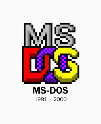

MS-DOS

Duas gigantes mercadológicas se uniram para a criar um computador com um sistema operacional já licenciado, com isso surgiu o primeiro IBM PC com o MS-DOS já incluso sendo um
sucesso comercial que gerou a ampliação do nicho tecnológico em todos os Estados Unidos,
e consequentemente o MS-DOS se tornou o primeiro sistema operacional a se tornar popular.
Diferencial Competitivo:
A primeira versão, IBM PC-DOS 1.0, foi lançada em agosto de 1981. Ela suportava até 256 KB de RAM
e dois disquetes de 160 kB 5.25" de face única. Suas principais características era ser um sistema
monousuário e monotarefa.
O sistema operacional "MS-DOS" foi criado originalmente pela
"Seattle Computer Projects"em meados
de 1980 com
o nome de QDOS, tendo seu sistema operacional comprado pela Microsoft no ano seguinte em 1981 onde
teve sua
nomenclatura alterada para a vigente.
Duas gigantes mercadológicas se uniram para a criar um computador com um sistema operacional já licenciado, com isso surgiu o primeiro IBM PC com o MS-DOS já incluso sendo um
sucesso comercial que gerou a ampliação do nicho tecnológico em todos os Estados Unidos,
e consequentemente o MS-DOS se tornou o primeiro sistema operacional a se tornar popular.
Diferencial Competitivo:
A primeira versão, IBM PC-DOS 1.0, foi lançada em agosto de 1981. Ela suportava até 256 KB de RAM
e dois disquetes de 160 kB 5.25" de face única. Suas principais características era ser um sistema
monousuário e monotarefa.
Irmão mais novo bem sucedido:
O MS-DOS viveu seu auge até 1995 onde foi escanteado pelo sistema operacional que surgiu a partir
dele o Microsoft Windows com sua versão Windows 95 que foi um sucesso absoluto no mercado,
nas décadas seguintes o MS-DOS teve sua popularidade severamente ofuscada pelo Windows e suas
O MS-DOS viveu seu auge até 1995 onde foi escanteado pelo sistema operacional que surgiu a partir
dele o Microsoft Windows com sua versão Windows 95 que foi um sucesso absoluto no mercado,
nas décadas seguintes o MS-DOS teve sua popularidade severamente ofuscada pelo Windows e suas
futuras versões. Sendo lembrado por sua importância para os sistemas operacionais na década de 80
até o início da década de 90.
até o início da década de 90.